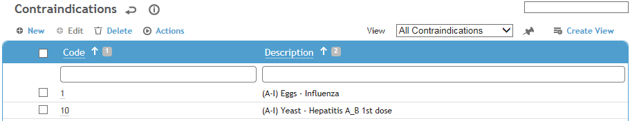
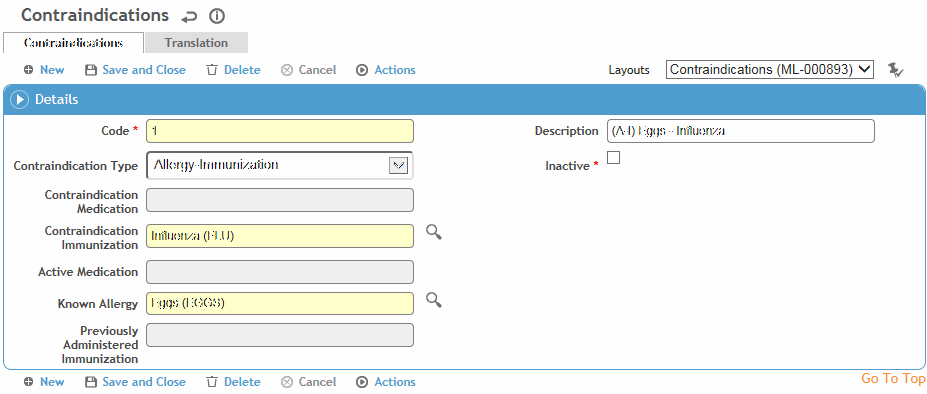

This table can be used to record information on universal immunization, medication and allergy contraindications. For example, the flu vaccine should not be given to anyone who is allergic to eggs.
To filter the list of records, enter a few characters in one or more of the fields at the top followed by an asterisk, then press Enter.

Click a link to edit a record, or click New to add a new record.

Select the Contraindication Type.
Select the immunization, medication, or allergy according to the Contraindication Type. For example, if you selected Allergy-Immunization as the Contraindication Type, then you would need to select the Immunization and the Allergy.
Click Save.
There are two types of contraindications: universal and employee-specific. Universal contraindications are those that apply to everyone, as defined in this look-up table.
Employee-specific contraindications, including any immunizations or medications refused by the employee, can be recorded on the Rx tab in the Demographics, Body Fluid Exposure, Medical Chart, Clinic Visits, Immunization, or Case Management modules (see Recording Medications (non-eRx)).
If an immunization, allergy, or medication that is referenced in this table is added to an employee record, the contraindication is automatically created for the employee.